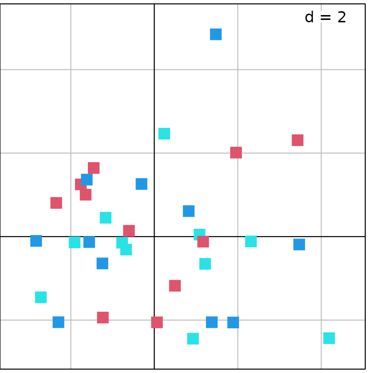
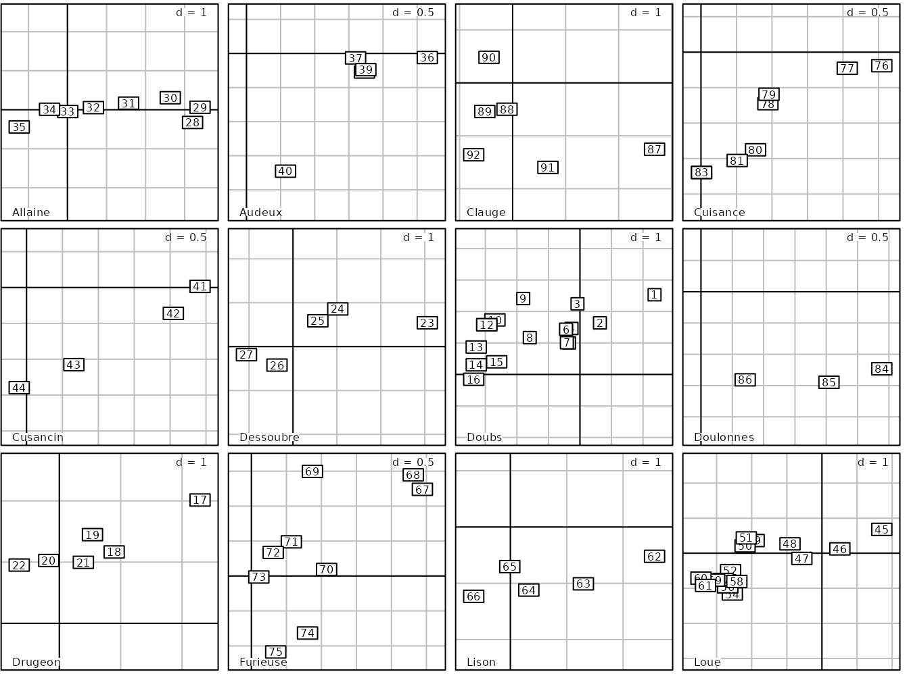
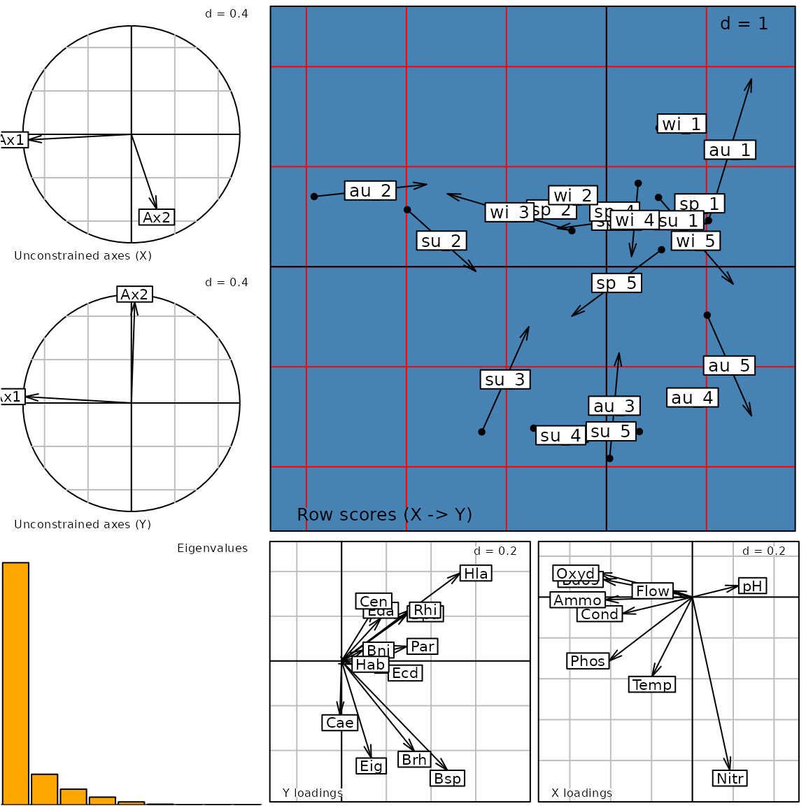
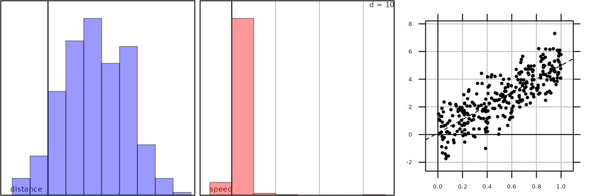
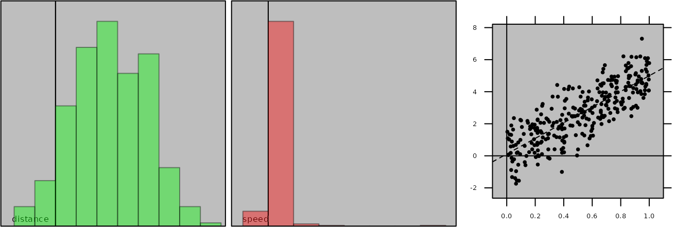
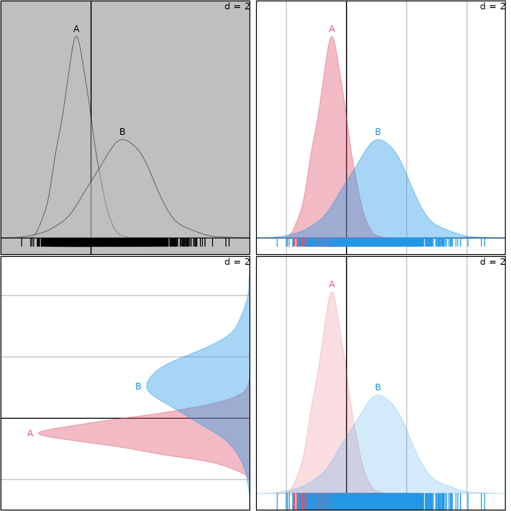
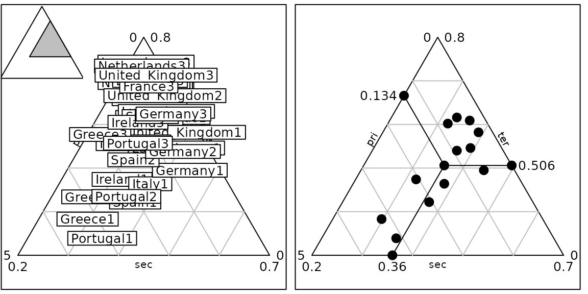

The `adegraphics` package
Alice Julien-Laferrière, Aurélie Siberchicot and Stéphane Dray
2024-07-19
Source:vignettes/adegraphics.Rmd
adegraphics.RmdThe adegraphics package (Siberchicot et al. 2017) is a complete
reimplementation of the graphical functionalities of the
ade4 package (Dray and Dufour
2007). The package has been initially designed to improve the
representation of the outputs of multivariate analyses performed with
ade4 but as its graphical functionalities are very general,
they can be used for other purposes.
The adegraphics package provides a flexible environment
to produce, edit and manipulate graphs. We adopted an object
oriented approach (a graph is an object) using S4
classes and methods and used the visualization system provided by the
lattice (Sarkar 2008) and
grid (Murrell 2005) packages.
In adegraphics, graphs are R objects that can be edited,
stored, combined, saved, removed, etc.
Note that we tried to facilitate the handling of
adegraphics by ade4 users. Hence, the name of
functions and parameters has been preserved in many cases. The main
changes are listed in the appendix of this vignette so that it should be
quite easy to use adegraphics. However, several new
functionalities (graphical parameters, creation and manipulation of
graphical objects, etc.) are now available and detailed in this
vignette.
The adelist mailing list can be used to send questions
and/or comments on adegraphics (see https://listes.univ-lyon1.fr/sympa/info/adelist)
An overview of object classes
In adegraphics, a user-level function produces a plot
that is stored (and returned) as an object. The class architecture of
the objects created by adegraphics functions is described
in Figure 1.
This class management highlights a hierarchy with two parent classes:
ADEgfor simple graphs. It contains the display of a single data set using only one kind of representation (e.g., arrows, points, lines, etc.)ADEgSfor multiple graphs. It contains a collection of at least two simple graphs (ADEg,trellisorADEgS)
The ADEg class has five child classes which are also
subdivided in several child classes. Each of these five child classes is
dedicated for a particular graphical data representation:
ADEg.S1: unidimensional graph of a numeric scoreADEg.S2: bidimensional graph of xy coordinates (matrixordata.frameobject)ADEg.C1: bidimensional graph of a numeric score (bar chart or curve)ADEg.T: heat map-like representation of a data table (matrix,data.frame,distortableobject)ADEg.Tr: ternary plot of xyz coordinates (matrixordata.frameobject)
The ADEg class and its five child classes are virtual:
it is not allowed to create object belonging to these classes. Users can
only create objects belonging to child classes by calls to user
functions (see the User functions
section).
Simple graph (ADEg object)
In the adegraphics package, a graph is created by a call
to a user function and stored as an R object. These functions allow to
display the raw data but also the outputs of a multivariate analysis.
The following sections describe the different graphical functions
available in the package.
User functions
Several user functions are available to create a simple graph (stored
as an ADEg object in R). Each function creates an object of
a given class (see Figure 1). Table 1 lists the different functions, their
corresponding classes and a short description. The ade4
users would not be lost: many functions have kept their names in
adegraphics. The main changes are listed in Table 2.
Table 1:
Graphical functions available in adegraphics
| Function | Class of the returned object | Description |
|---|---|---|
s1d.barchart |
C1.barchart |
1-D plot of a numeric score by bars |
s1d.curve |
C1.curve |
1-D plot of a numeric score linked by curves |
s1d.curves |
C1.curves |
1-D plot of multiple scores linked by curves |
s1d.density |
C1.density |
1-D plot of a numeric score by density curves |
s1d.dotplot |
C1.dotplot |
1-D plot of a numeric score by dots |
s1d.gauss |
C1.gauss |
1-D plot of a numeric score by Gaussian curves |
s1d.hist |
C1.hist |
1-D plot of a numeric score by bars |
s1d.interval |
C1.interval |
1-D plot of the interval between two numeric scores |
s1d.boxplot |
S1.boxplot |
1-D box plot of a numeric score partitioned in classes |
s1d.class |
S1.class |
1-D plot of a numeric score partitioned in classes |
s1d.distri |
S1.distri |
1-D plot of a numeric score by means/tandard deviations computed using an external table of weights |
s1d.label |
S1.label |
1-D plot of a numeric score with labels |
s1d.match |
S1.match |
1-D plot of the matching between two numeric scores |
s.arrow |
S2.arrow |
2-D scatter plot with arrows |
s.class |
S2.class |
2-D scatter plot with a partition in classes |
s.corcircle |
S2.corcircle |
Correlation circle |
s.density |
S2.density |
2-D scatter plot with kernel density estimation |
s.distri |
S2.distri |
2-D scatter plot with means/standard deviations computed using an external table of weights |
s.image |
S2.image |
2-D scatter plot with loess estimation of an additional numeric score |
s.label |
S2.label |
2-D scatter plot with labels |
s.logo |
S2.logo |
2-D scatter plot with logos (pixmap objects) |
s.match |
S2.match |
2-D scatter plot of the matching between two sets of coordinates |
s.Spatial |
S2.label |
Mapping of a Spatial* object |
s.traject |
S2.traject |
2-D scatter plot with trajectories |
s.value |
S2.value |
2-D scatter plot with proportional symbols |
table.image |
T.image |
Heat map-like representation with colored cells |
table.value |
T.value or T.cont
|
Heat map-like representation with proportional symbols |
triangle.class |
Tr.class |
Ternary plot with a partition in classes |
triangle.label |
Tr.label |
Ternary plot with labels |
triangle.match |
Tr.match |
Ternary plot of the matching between two sets of coordinates |
triangle.traject |
Tr.match |
Ternary plot with trajectories |
Table 2: Changes in functions names between
ade4 and adegraphics
Function in ade4
|
Equivalence in adegraphics
|
|---|---|
table.cont, table.dist,
table.value
|
table.value 1
|
table.paint |
table.image |
sco.boxplot |
s1d.boxplot |
sco.class |
s1d.class |
sco.distri |
s1d.distri |
sco.gauss |
s1d.gauss |
sco.label |
s1d.label |
sco.match |
s1d.match |
sco.quant |
no equivalence |
s.chull |
s.class2
|
s.kde2d |
s.density |
s.match.class |
superposition of s.match and
s.class
|
triangle.biplot |
triangle.match |
triangle.plot |
triangle.label |
s.multinom |
triangle.multinom |
Arguments
The list of arguments of a function are given by the
args function.
## Registered S3 methods overwritten by 'adegraphics':
## method from
## biplot.dudi ade4
## kplot.foucart ade4
## kplot.mcoa ade4
## kplot.mfa ade4
## kplot.pta ade4
## kplot.sepan ade4
## kplot.statis ade4
## scatter.coa ade4
## scatter.dudi ade4
## scatter.nipals ade4
## scatter.pco ade4
## score.acm ade4
## score.mix ade4
## score.pca ade4
## screeplot.dudi ade4##
## Attaching package: 'adegraphics'## The following objects are masked from 'package:ade4':
##
## kplotsepan.coa, s.arrow, s.class, s.corcircle, s.distri, s.image,
## s.label, s.logo, s.match, s.traject, s.value, table.value,
## triangle.class
args(s.label)## function (dfxy, labels = rownames(dfxy), xax = 1, yax = 2, facets = NULL,
## plot = TRUE, storeData = TRUE, add = FALSE, pos = -1, ...)
## NULLSome arguments are very general and present in all user functions:
plot: a logical value indicating if the graph should be displayedstoreData: a logical value indicating if the data should be stored in the returned object. IfFALSE, only the names of the data are stored. This allows to reduce the size of the returned object but it implies that the data should not be modified in the environment to plot again the graph.add: a logical value indicating if the graph should be superposed on the graph already displayed in the current device (it replaces the argumentadd.plotinade4).pos: an integer indicating the position of the environment where the data are stored, relative to the environment where the function is called. Useful only ifstoreDataisFALSE.…: additional graphical parameters (see below)
Some other arguments influence the graphical outputs and they are
thus specific to the type of produced graph. Figure 2 summarizes some of these graphical
parameters available for the different functions. We only reported the
parameters stored in the g.args slot of the returned object
(see the Parameters in g.args
section).
The ade4 users would note that the names of some
arguments have been modified in adegraphics. The Appendix gives a full list of these
modifications.
Slots and Methods
A call to a graphical function (see the User functions section) returns an
ADEg object. Each object is defined by a number of slots
and several methods are associated to this class. Let us consider the
olympic data set available in the ade4
package. A principal component analysis (PCA) is applied on the
olympic$tab table that contains the results for 33
participating athletes at the 1988 summer olympic games:
The barplot of eigenvalues is then drawn and stored in
g1:
g1 <- s1d.barchart(pca1$eig, p1d.horizontal = F, ppolygons.col = "white")
The class of the g1 object is
C1.barchart which extends the ADEg class:
class(g1)## [1] "C1.barchart"
## attr(,"package")
## [1] "adegraphics"
showClass("C1.barchart")## Class "C1.barchart" [package "adegraphics"]
##
## Slots:
##
## Name: data trellis.par adeg.par lattice.call g.args
## Class: list list list list list
##
## Name: stats s.misc Call
## Class: list list call
##
## Extends:
## Class "ADEg.C1", directly
## Class "ADEg", by class "ADEg.C1", distance 2
## Class "ADEgORtrellis", by class "ADEg.C1", distance 3
## Class "ADEgORADEgSORtrellis", by class "ADEg.C1", distance 3
This object contains different slots:
slotNames(g1)## [1] "data" "trellis.par" "adeg.par" "lattice.call" "g.args"
## [6] "stats" "s.misc" "Call"
These slots are defined for each ADEg object and
contain different types of information. The package
adegraphics uses the capabilities of the
lattice package to display a graph (by generating a
trellis object). Hence, several slots contain information
that will be passed in the call to the lattice
functions:
data: a list containing information about the data.trellis.par: a list of graphical parameters that are directly passed to thelatticefunctions using thepar.settingsargument (see the Parameters intrellis.parsection).adeg.par: a list of graphical parameters defined inadegraphics. The list of parameters can be obtained using theadegparfunction (see the Parameters inadeg.parsection).lattice.call: a list of two elements containing the information required to create thetrellisobject:graphictype(the name of thelatticefunctions that should be used) andarguments(the list of parameter values required to obtain thetrellisobject).g.args: a list containing at least the different values of the graphical arguments described in Figure 2 (see the Parameters ing.argssection).stats: a list of internal preliminary computations performed to display the graph.s.misc: a list of other internal parameters.Call: an object of classcallcontaining the matched call.
These different slots can be extracted using the @
operator:
g1@data## $score
## [1] 3.4182381 2.6063931 0.9432964 0.8780212 0.5566267 0.4912275 0.4305952
## [8] 0.3067981 0.2669494 0.1018542
##
## $at
## [1] 1 2 3 4 5 6 7 8 9 10
##
## $frame
## [1] 33
##
## $storeData
## [1] TRUE
All these slots are automatically filled during the object
creation. The trellis.par, adeg.par and
g.args can also be modified a posteriori using the
update method (see the Customizing a
graph section). This allows to customize graphs after their
creation.
We consider the correlation circle that depicts the correlation between PCA axes and the results for each event:
g2 <- s.corcircle(pca1$co)
class(g2)## [1] "S2.corcircle"
## attr(,"package")
## [1] "adegraphics"
g2@g.args## $fullcircle
## [1] TRUE
##
## $xlim
## [1] -1.2 1.2
##
## $ylim
## [1] -1.2 1.2
##
## $scales
## $scales$draw
## [1] FALSE
The argument fullcircle can be updated a
posteriori so that the original object is modified:
update(g2, fullcircle = FALSE)
g2@g.args## $fullcircle
## [1] FALSE
##
## $xlim
## [1] -0.8815395 0.9544397
##
## $ylim
## [1] -0.6344523 1.2015270
##
## $scales
## $scales$draw
## [1] FALSESeveral other methods have been defined for the ADEg
class allowing to extract information, modify or combine objects:
getcall,getlatticecallandgetstats: these accessor methods return respectively theCall, thelattice.calland thestatsslots.getparameters: this method returns thetrellis.parand/or theadeg.parslots.show,printandplot: these methods display theADEgobject in the current device or in a new one.gettrellis: this method returns theADEgobject as atrellisobject. It can then be exploited using thelatticeandlatticeExtrapackages.superpose,+andadd.ADEg: these methods superpose twoADEggraphs. It returns a multiple graph object of classADEgS(see the The basic methods for superposition, juxtaposition and insertion section).insert: this method inserts anADEggraph in an existing one or in the current device. It returns anADEgSobject (see the The basic methods for superposition, juxtaposition and insertion section).cbindADEg,rbindADEg: these methods combine severalADEggraphs. It returns anADEgSobject (see the The basic methods for superposition, juxtaposition and insertion section).update: this method modifies the graphical parameters after theADEgcreation. It updates the current display and returns the modifiedADEg(see the Customizing a graph section).
For instance:
getcall(g1) ## equivalent to g1@Call## s1d.barchart(score = pca1$eig, p1d.horizontal = F, ppolygons.col = "white")A biplot-like graph can be obtained using the superpose
method. The result is a multiple graph:
class(g4)## [1] "ADEgS"
## attr(,"package")
## [1] "adegraphics"In addition, some object classes have specific methods. For instance,
a zoom method is available for ADEg.S1 and
ADEg.S2 classes. For the ADEg.S2 class, the
method addhist (see the The basic
methods for superposition, juxtaposition and insertion section)
decorates a 2-D graph by adding marginal distributions as histograms and
density lines (this method replaces and extends the s.hist
function of ade4).
Multiple graph (ADEgS object)
The adegraphics package provides class
ADEgS to manage easily the combination of several graphs.
This class allows to deal with the superposition, insertion or
juxtaposition of several graphs in a single object. An object of this
class is a list containing several graphical objects and information
about their positioning. Different ways to generate ADEgS
objects are described below.
Slots and Methods
The class ADEgS is used to store multiple graphs.
Different slots are associated to this class (use the symbol
@ to extract information):
ADEglist: a list of graphs stored astrellis,ADEgand/orADEgSobjects.positions: a matrix containing the positions of the graphs. It has four columns and as many rows as the number of graphical objects in theADEglistslot. For each graph (i.e. row), it contains the coordinates of the bottom-left and top-right corners innpcunits (i.e. normalized parent coordinates varying between 0 and 1).add: a square binary matrix with as many rows and columns as the number of graphical objects in theADEglistslot. It allows to manage the superposition of graphs: the value at the i-th row and j-th column is equal to 1 if the j-th graphical object is superposed on the i-th. Otherwise, this value is equal to 0.Call: an object of classcallcontaining the matched call.
Several methods have been implemented to obtain information, edit or
modify ADEgS objects. Several methods are inspired from the
management of list in R:
[,[[and$: these methods extract one or more elements from theADEgSobject.getpositions,getgraphicsandgetcall: these methods return thepositions, theADEglistand theCallslots, respectively.namesandlength: these methods return the names and number of graphs contained in the object.[[<-andnames<-: these methods replace a graph or its name in anADEgSobject (acts on theADEglistslot).show,plotandprint: these methods display theADEgSobject in the current device or in a new one.superposeand+: these methods superpose two graphs. It returns a multiple graph object of classADEgS(see the The basic methods for superposition, juxtaposition and insertion section).insert: this method inserts a graph in an existing one or in the current device. It returns a multiple graph object of classADEgS(see the The basic methods for superposition, juxtaposition and insertion section).cbindADEg,rbindADEg: these methods combine several graphs. It returns anADEgSobject (see the The basic methods for superposition, juxtaposition and insertion section).update: this method modifies the names and/or thepositionsof the graphs contained in anADEgSobject. It updates the current display and returns the modifiedADEgS.
We will show in the next sections how these methods can be used to
deal with ADEgS objects.
Creating an ADEgS object by hand
The ADEgS objects can be created by easy manipulation of
several simple graphs. Some methods (e.g., insert,
superpose) can be used to create a compilation of graphs by
hand.
The basic methods for superposition, juxtaposition and insertion
The functions superpose, + and
add.ADEg allow the superposition of an
ADEg/ADEgS object on an
ADEg/ADEgS object.
The vector olympic$score contains the total number of
points computed for each participant. This vector is used to generate a
factor partitioning the participants in two groups
according to their final result (more or less than 8000 points):
These two groups can be represented on the PCA factorial map using
the s.class function:
g5 <- s.class(pca1$li, fac.score, col = c("red", "blue"), chullSize = 1, ellipseSize = 0,
plabels.cex = 2, pbackground.col = "grey85", paxes.draw = TRUE)The graph with the labels (object g3) can then be
superposed on this one:
g6 <- superpose(g5, g3, plot = TRUE) ## equivalent to g5 + g3
class(g6)## [1] "ADEgS"
## attr(,"package")
## [1] "adegraphics"In the case of a superposition, the graphical parameters (e.g.,
background and limits) of the first graph (the one below) are used as a
reference and applied to the second one (the one above). Note that it is
also possible to use the add = TRUE argument in the call of
a simple user function (functions described in Table 1) to perform a superposition. The graph
g6 can also be obtained by:
g5
s.label(pca1$li, add = TRUE)The functions cbindADEg and rbindADEg
allows to combine several graphical objects (ADEg,
ADEgS or trellis) by rows or by columns. The
new created ADEgS contains the list of the reduced
graphs:
The function insert allows the insertion of a graphical
object on another one (ADEg or ADEgS). It
takes the position of the inserted graph as an argument:
class(g7)## [1] "ADEgS"
## attr(,"package")
## [1] "adegraphics"The different methods associated to the ADEgS class
allow to obtain information and to modify the multiple graph:
length(g7)## [1] 3
names(g7)## [1] "g1" "g2" "X"## [1] "ADEgS"
## attr(,"package")
## [1] "adegraphics"
class(g7[[1]])## [1] "S2.class"
## attr(,"package")
## [1] "adegraphics"
class(g7$chulls)## [1] "S2.class"
## attr(,"package")
## [1] "adegraphics"The multiple graph contains three simple graphs. It can be easily updated. For instance, the size of the inserted graph can be modified:
pos.mat <- getpositions(g7)
pos.mat## [,1] [,2] [,3] [,4]
## 0.00 0.00 1.00 1.00
## 0.00 0.00 1.00 1.00
## positions 0.65 0.65 0.95 0.95The graphs themselves can be modified, without affecting the global
structure of the ADEgS object. Here, we replace the
correlation circle by the barplot of eigenvalues:
g7[[3]] <- g1
g7The addhist method adds univariate marginal
distributions around an ADEg.S2 and returns an
ADEgS object:
addhist(g3)More examples are available in the help page by typing
example(superpose), example(insert),
example(add.ADEg) and example(addhist) in the
R session.
The ADEgS function
The ADEgS function provides the most elementary and
flexible way to create an ADEgS object. The different
arguments of the function are:
adeglist: a list of severaltrellis,ADEgand/orADEgSobjects.positions: a matrix with four columns and as many rows as the number of graphical objects in theADEglistslot. For each subgraph, i.e. in each row, the coordinates of the top-right and the bottom-left hand corners are given innpcunits (i.e., normalized parent coordinates varying from 0 to 1).layout: an alternative way to specify the positions of graphs. It could be a vector of length 2 indicating the number of rows and columns used to split the device (similar tomfrowparameter in basic graphs). It could also be a matrix specifying the location of the graphs: each value in this matrix should be 0 or a positive integer (similar tolayoutfunction for basic graphs).add: a square matrix with as many rows and columns as the number of graphical objects in theADEglistslot. The value at the i-th row and j-th column is equal to 1 if the j-th graphical object is superposed to i-th one. Otherwise, this value is equal to 0.plot: a logical value indicating if the graphs should be displayed.
When users fill only one argument among positions,
layout and add, the other values are
automatically computed to define the ADEgS object.
We illustrate the different possibilities to create objects with the
ADEgS function. Simple juxtaposition using a vector as
layout:
Layout specified as a matrix:
## [,1] [,2] [,3]
## [1,] 1 1 0
## [2,] 1 1 0
## [3,] 0 0 2Using the matrix of positions offers a very flexible way to arrange the different graphs:
mpos <- rbind(c(0, 0.3, 0.7, 1), c(0.5, 0, 1, 0.5))
ADEgS(adeglist = list(g3, g5), positions = mpos)Lastly, superposition can also be specified using the
add argument:
More examples are available in the help page by typing
example(ADEgS) in the R session.
Automatic collections
The package adegraphics contains functionalities to
create collections of graphs. These collections are based on a simple
graph repeated for different groups of individuals, variables or axes.
The building process of these collections is quite simple (definition of
arguments in the call of a user function) and leads to the creation of
an ADEgS object.
Partitioning the data (facets)
The adegraphics package allows to split up the data by
one variable (factor) and to plot the subsets of data
together. This possibility of conditional plot is available for all user
functions (except the table.* functions) by setting the
facets argument. This is directly inspired by the
functionalities offered in the lattice and
ggplot2 packages.
Let us consider the jv73 data set. The table
jv73$morpho contains the measures of 6 variables describing
the geomorphology of 92 sites. A PCA can be performed on this data
set:
The sites are located on 12 rivers (jv73$fac.riv) and it
is possible to represent the PCA scores for each river using the
facets argument:
g8 <- s.label(pca2$li, facets = jv73$fac.riv)
length(g8)## [1] 12
names(g8)## [1] "Allaine" "Audeux" "Clauge" "Cuisance" "Cusancin" "Dessoubre"
## [7] "Doubs" "Doulonnes" "Drugeon" "Furieuse" "Lison" "Loue"The ADEgS returned object contains the 12 plots. It is
then possible to focus on a given river (e.g., the Doubs river) by
considering only a subplot (e.g., type g8$Doubs). The
facets functionality is very general and available for the
majority of adegraphics functions. For instance, with the
s.class function:
Multiple axes
All 2-D functions (i.e. s.*) returning an object
inheriting from the ADEg.S2 class have the xax
et yax arguments. These arguments allow to choose which
column of the main argument (i.e. df) should be plotted as
x and y axes. As in ade4, these two arguments can be simple
integers. In adegraphics, the user can also specify vectors
as xax and/or yax arguments to obtain multiple
graphs. Here, we represent the different correlation circles associated
to the first four PCA axes of the olympic data set:
pca1 <- dudi.pca(olympic$tab, scannf = FALSE, nf = 4)
g9 <- s.corcircle(pca1$co, xax = 1:2, yax = 3:4)
length(g9)## [1] 4
names(g9)## [1] "x1y3" "x2y3" "x1y4" "x2y4"
g9@positions## [,1] [,2] [,3] [,4]
## [1,] 0.0 0.5 0.5 1.0
## [2,] 0.5 0.5 1.0 1.0
## [3,] 0.0 0.0 0.5 0.5
## [4,] 0.5 0.0 1.0 0.5Multiple score
All 1-D functions (i.e. s1d.*) returning an object
inheriting from the ADEg.C1 or ADEg.S1 classes
have the score argument. Usually, this argument should be a
numeric vector but it is also possible to consider an object with
several columns (data.frame or matrix). In
this case, an ADEgS object is returned in which one graph
by column is created. For instance for the olympic data
set, we can represent the link between the global performance
(fac.score) and the PCA scores on the first four axes
(pca1$li):
dim(pca1$li)## [1] 33 4
s1d.boxplot(pca1$li, fac.score, col = c("red", "blue"),
psub = list(position = "topleft", cex = 2))Multiple variable
Some user functions (s1d.density,
s1d.gauss, s1d.boxplot,
s1d.class, s.class, s.image,
s.traject, s.value,
triangle.class) have an argument named fac or
z. This argument can have several columns
(data.frame or matrix) so that each column is
used to create a separate graph. For instance, we can represent the
distribution of the 6 environmental variables on the PCA factorial map
of the jv73$tab data set:
s.value(pca2$li, pca2$tab, symbol = "circle")Outputs of the ade4 package
Lastly, we reimplemented all the graphical functions of the
ade4 package designed to represent the outputs of a
multivariate analysis. The functions ade4::plot.*,
ade4::kplot.*, ade4::scatter.* and
ade4::score.* return ADEgS objects. It is now
very easy to represent or modify these graphical outputs:
data(meaudret)
pca3 <- dudi.pca(meaudret$env, scannf = FALSE)
pca4 <- dudi.pca(meaudret$spe, scale = FALSE, scannf = FALSE)
coi1 <- coinertia(pca3, pca4, scannf = FALSE, nf = 3)
g10 <- plot(coi1)
class(g10)## [1] "ADEgS"
## attr(,"package")
## [1] "adegraphics"
names(g10)## [1] "Xax" "Yax" "eig" "XYmatch" "Yloadings" "Xloadings"
g10@Call## plot.coinertia(x = coi1)Customizing a graph
Compared to the ade4 package, the main advantage of
adegraphics concerns the numerous possibilities to
customize a graph using several graphical parameters. These parameters
are stored in slots trellis.par, adeg.par and
g.args (see the Slots and Methods
section) of an ADEg object. These parameters can be defined
during the creation of a graph or updated a posteriori (using
the update method).
Parameters in trellis.par
The trellis.par slot is a list of parameters that are
directly included in the call of functions of the lattice
package. The name of parameters and their default value are given by the
trellis.par.get function of lattice.
## [1] "add.line" "add.text" "as.table"
## [4] "axis.components" "axis.line" "axis.text"
## [7] "background" "box.3d" "box.dot"
## [10] "box.rectangle" "box.umbrella" "clip"
## [13] "dot.line" "dot.symbol" "fontsize"
## [16] "grid.pars" "layout.heights" "layout.widths"
## [19] "panel.background" "par.main.text" "par.sub.text"
## [22] "par.title.text" "par.xlab.text" "par.ylab.text"
## [25] "par.zlab.text" "plot.line" "plot.polygon"
## [28] "plot.symbol" "reference.line" "regions"
## [31] "shade.colors" "strip.background" "strip.border"
## [34] "strip.shingle" "superpose.line" "superpose.polygon"
## [37] "superpose.symbol"Hence, modifications of some of these parameters will modify the
graphical display of an ADEg object. For instance, margins
are defined using layout.widths and
layout.heights parameters, clip parameter
allows to overpass panel boundaries and axis.line and
axis.text allow to customize lines and text of axes.
d <- scale(olympic$tab)
g11 <- table.image(d, plot = FALSE)
g12 <- table.image(d, axis.line = list(col = "blue"), axis.text = list(col = "red"),
plot = FALSE)
ADEgS(c(g11, g12), layout = c(1, 2))Parameters in adeg.par
The adeg.par slot is a list of graphical parameters
specific to the adegraphics package. The name of parameters
and their default value are available using the adegpar
function which is inspired by the par function of the
graphics package.
## [1] "p1d" "parrows" "paxes" "pbackground" "pellipses"
## [6] "pgrid" "plabels" "plegend" "plines" "pnb"
## [11] "porigin" "ppalette" "ppoints" "ppolygons" "pSp"
## [16] "psub" "ptable"A description of these parameters is available in the help page of
the function (?adegpar). Note that each
adeg.par parameter starts by the letter ’p’ and its name
relates to the type of graphical element considered (ptable
is for tables display, ppoints for points,
parrows for arrows, etc). Each element of this list can
contain one or more sublists. Details on a sublist are obtained using
its name either as a parameter of the adegpar function or
after the $ symbol. For example, if we want to know the
different parameters to manage the display of points:
adegpar("ppoints")## $ppoints
## $ppoints$alpha
## [1] 1
##
## $ppoints$cex
## [1] 1
##
## $ppoints$col
## [1] "black"
##
## $ppoints$pch
## [1] 20
##
## $ppoints$fill
## [1] "black"
adegpar()$ppoints## $alpha
## [1] 1
##
## $cex
## [1] 1
##
## $col
## [1] "black"
##
## $pch
## [1] 20
##
## $fill
## [1] "black"The full list of available parameters is summarized in Figure 3.
The ordinate represents the different sublists and the abscissa gives
the name of the parameters available in each sublist. Note that some row
names have two keys separated by a dot: the first key indicates the
first level of the sublist, etc. For example plabels.boxes
is the sublist boxes of the sublist plabels.
The parameters border,col, alpha,
lwd, lty and draw in
plabels.boxes allow to control the aspect of the boxes
around labels.
According to the function called, only some of the full list of
adeg.par parameters are useful to modify the graphical
display. Figure 4 indicates which
parameters can affect the display of an object created by a given user
function. For example, the background (pbackground
parameter) can be modified for all functions whereas the display of
ellipses (pellipses parameter) affects only three
functions.
Global assignment
The adegpar function allows to modify globally the
values of graphical parameters so that changes will affect all
subsequent displays. For example, we update the size/color of labels and
add axes to a plot:
## $plabels
## $plabels$alpha
## [1] 1
##
## $plabels$cex
## [1] 1
##
## $plabels$col
## [1] "black"
##
## $plabels$srt
## [1] "horizontal"
##
## $plabels$optim
## [1] FALSE
##
## $plabels$boxes
## $plabels$boxes$alpha
## [1] 1
##
## $plabels$boxes$border
## [1] "black"
##
## $plabels$boxes$col
## [1] "white"
##
## $plabels$boxes$draw
## [1] TRUE
##
## $plabels$boxes$lwd
## [1] 1
##
## $plabels$boxes$lty
## [1] 1
g13 <- s.label(dfxy = pca1$li, plot = FALSE)
adegpar(plabels = list(col = "blue", cex = 1.5), paxes.draw = TRUE)
adegpar("plabels")## $plabels
## $plabels$alpha
## [1] 1
##
## $plabels$cex
## [1] 1.5
##
## $plabels$col
## [1] "blue"
##
## $plabels$srt
## [1] "horizontal"
##
## $plabels$optim
## [1] FALSE
##
## $plabels$boxes
## $plabels$boxes$alpha
## [1] 1
##
## $plabels$boxes$border
## [1] "black"
##
## $plabels$boxes$col
## [1] "white"
##
## $plabels$boxes$draw
## [1] TRUE
##
## $plabels$boxes$lwd
## [1] 1
##
## $plabels$boxes$lty
## [1] 1As the adegpar function can accept numerous graphical
parameters, it can be used to define some graphical themes. The next
releases of adegraphics will offer functionalities to
easily create, edit and store graphical themes. Here, we reassign the
original default parameters:
adegpar(oldadegpar)Local assignment
A second option is to update the graphical parameters locally so that
the changes will only modify the object created. This is done using the
dots (...) argument in the call to a user function. In this
case, the default values of parameters in the global environment are not
modified:
adegpar("ppoints")## $ppoints
## $ppoints$alpha
## [1] 1
##
## $ppoints$cex
## [1] 1
##
## $ppoints$col
## [1] "black"
##
## $ppoints$pch
## [1] 20
##
## $ppoints$fill
## [1] "black"
adegpar("ppoints")## $ppoints
## $ppoints$alpha
## [1] 1
##
## $ppoints$cex
## [1] 1
##
## $ppoints$col
## [1] "black"
##
## $ppoints$pch
## [1] 20
##
## $ppoints$fill
## [1] "black"In the previous example, we can see that parameters can be either
specified using a ’.’ separator or a list. For instance,
using plabels.cex = 0 or
plabels = list(cex = 0) is strictly equivalent. Moreover,
partial names can be used if there is no ambiguity (such as
plab.ce = 0 in our example).
Parameters in g.args
The g.args slot is a list of parameters specific to the
function used (and thus to the class of the returned object). Several
parameters are very general and used in all adegraphics
functions:
xlim,ylim: limits of the graph on the x and y axesmain,sub: main title and subtitlexlab,ylab: labels of the x and y axesscales: a list determining how the x and y axes (tick marks dans labels) are drawn; this is thescalesparameter of thexyplotfunction oflattice
The ADEg.S2 objects can also contain spatial information
(map stored as a Spatial object or neighborhood stored as a
nb object):
Sp,sp.layout: objects from thesppackage to display spatial objects,Spfor maps andsp.layoutfor spatial widgets as a North arrow, scale, etc.nbobject: object of classnborlistwto display neighbor graphs.
When the facets (see the Partitioning
the data (facets) section) argument is used, users can
modify the parameter samelimits: if it is
TRUE, all graphs have the same limits whereas limits are
computed for each subgraph independently when it is FALSE.
For example, considering the jv73 data set, each subgraph
is computed with its own limits and labels are then more scattered:
s.label(pca2$li, facets = jv73$fac.riv, samelimits = FALSE)
Several other g.args parameters can be updated according
to the class of the created object (see Figure
2).
Parameters applied on a ADEgS
Users can either apply the changes to all graphs or to update only
one graph. Of an ADEgS, to apply changes on all the graphs
contained in an ADEgS, the syntax is similar to the one
described for an ADEg object. For example, background color
can be changed for all graphs in g10 using the
pbackground.col parameter.
g15 <- plot(coi1, pbackground.col = "steelblue")To change the parameters of a given graph, the name of the parameter must be preceded by the name of the subgraph. This supposes that the names of subgraphs are known. For example, to modify only two graphs:
names(g15)## [1] "Xax" "Yax" "eig" "XYmatch" "Yloadings" "Xloadings"
plot(coi1, XYmatch.pbackground.col = "steelblue", XYmatch.pgrid.col = "red",
eig.ppolygons.col = "orange")
Using adegraphics functions in your package
In this section, we illustrate how adegraphics
functionalities can be used to implement graphical functions in your own
package. We created an objet of class track that contains a
vector of distance and time.
tra1 <- list()
tra1$time <- runif(300)
tra1$distance <- tra1$time * 5 + rnorm(300)
class(tra1) <- "track"For an object of the class track, we wish to represent
different components of the data:
an histogram of distances
an histogram of speeds (i.e., distance / time)
a 2D plot representing the distance, the time and the line corresponding to the linear model that predict distance by time
The corresponding multiple plot can be done using
adegraphics functions:
g1 <- s1d.hist(tra1$distance, psub.text = "distance", ppolygons.col = "blue",
pgrid.draw = FALSE, plot = FALSE)
g2 <- s1d.hist(tra1$distance / tra1$time, psub.text = "speed", ppolygons.col = "red",
plot = FALSE)
g31 <- s.label(cbind(tra1$time, tra1$distance), paxes = list(aspectratio = "fill",
draw = TRUE), plot = FALSE)
g32 <- xyplot(tra1$distance ~ tra1$time, aspect = g31@adeg.par$paxes$aspectratio,
panel = function(x, y) {panel.lmline(x, y)})
g3 <- superpose(g31, g32)
G <- ADEgS(list(g1, g2, g3))
To facilitate the graphical representation of an object of class
track, the simplest solution is to design a function
plot for this class. We illustrate how to define such
function with a particular emphasis on the management of graphical
parameters. The function is provided below and we detail the different
steps.
plot.track <- function(x, pos = -1, storeData = TRUE, plot = TRUE, ...) {
## step 1 : sort parameters for each graph
graphsnames <- c("histDist", "histSpeed", "regression")
sortparameters <- sortparamADEgS(..., graphsnames = graphsnames,
nbsubgraphs = c(1, 1, 2))
## step 2 : define default values for graphical parameters
params <- list()
params[[1]] <- list(psub = list(text = "distance"), ppolygons = list(col = "blue"),
pgrid = list(draw = FALSE))
params[[2]] <- list(psub = list(text = "speed"), ppolygons = list(col = "red"),
pgrid = list(draw = FALSE))
params[[3]] <- list()
params[[3]]$l1 <- list(paxes = list(aspectratio = "fill", draw = TRUE))
params[[3]]$l2 <- list()
names(params) <- graphsnames
sortparameters <- modifyList(params, sortparameters, keep.null = TRUE)
## step 3 : create each individual plot (ADEg)
g1 <- do.call("s1d.hist", c(list(score = substitute(x$distance), plot = FALSE,
storeData = storeData, pos = pos - 2), sortparameters[[1]]))
g2 <- do.call("s1d.hist", c(list(score = substitute(x$distance / x$time),
plot = FALSE, storeData = storeData, pos = pos - 2), sortparameters[[2]]))
g31 <- do.call("s.label", c(list(dfxy = substitute(cbind(x$time, x$distance)), plot =
FALSE, storeData = storeData, pos = pos - 2), sortparameters[[3]][[1]]))
g32 <- xyplot(x$distance ~ x$time, aspect = g31@adeg.par$paxes$aspectratio,
panel = function(x, y) {panel.lmline(x, y)})
g3 <- do.call("superpose", list(g31, g32))
g3@Call <- call("superpose", g31@Call, g32$call)
## step 4 : create the multiple plot (ADEgS)
lay <- matrix(1:3, 1, 3)
object <- new(Class = "ADEgS", ADEglist = list(g1, g2, g3), positions =
layout2position(lay), add = matrix(0, ncol = 3, nrow = 3),
Call = match.call())
names(object) <- graphsnames
if(plot)
print(object)
invisible(object)
}In the first step, the arguments given by the user through the dots
(…) argument are managed. A name is given to each subgraph and stored in
the vector graphnames. Then, the function
sortparamADEgS associates the graphical parameters of the
dots (…) argument to each subgraph. If a prefix is specified and matches
the name of a graph (e.g.,
histDist.pbackground.col = grey), the parameter is applied
only to the graphic specified (e.g., called histDist). If
no prefix is specified (e.g., pbackground.col = grey), the
parameter is applied to all subgraphs. The function
sortparamADEgS returns a list (length equal to the number
of subgraph) of lists of graphical parameters.
In the second step, default values for some graphical parameters are
modified. The default parameters are stored in a list which has the same
structure that the one produced by sortparamADEgS (i.e.,
names corresponding to those contained in graphsnames).
Then, the modifyList function is applied to merge user and
defaults values of paramaters (if a parameter is specified by the user
and in the default, the value given by the user is used).
In the third step, each subgraph is created. Here, we create two
C1.hist objects and superpose a S2.label
object and a trellis one. The functions
do.call and substitute are used to provide a
pretty call for each subgraph (stored in the Call
slot).
In a final step, the multiple graph is build through the creation of
a new ADEgS object and possibly plotted.
The plot.track function can then be used by:
plot(tra1)Graphical parameters can be modified by:
plot(tra1, histDist.ppoly.col = "green", pbackground.col = "grey")
Examples
Ellipses, stars and convex hulls
g18 <- s.class(pca3$li, fac = meaudret$design$season, plot = FALSE)
g19 <- s.class(pca3$li, fac = meaudret$design$season, ellipseSize = 0,
chullSize = 1, starSize = 0.5, col = TRUE, plot = FALSE)
g20 <- s.class(pca3$li, fac = meaudret$design$season, pellipses.lwd = 2,
pellipses.border = 2:5, pellipses.col = 2:5, plot = FALSE)
g21 <- s.class(pca3$li, fac = meaudret$design$season, ellipseSize = 0,
chullSize = 0, ppolygons.lwd = 2, plines.col = 2:5, starSize = 1.2, plot = FALSE)
ADEgS(c(g18, g19, g20, g21), layout = c(2, 2))Values and legend
data(rpjdl)
coa2 <- dudi.coa(rpjdl$fau, scannf = FALSE, nf = 3)
g22 <- s.value(coa2$li, coa2$li[,3], plot = FALSE)
g23 <- s.value(coa2$li, coa2$li[,3], method = "color", ppoints.cex = 0.8,
plegend.size= 0.8, plot = FALSE)
g24 <- s.value(coa2$li, coa2$li[,3], plegend.size = 0.8, ppoints.cex = 0.8,
symbol = "square", method = "color", key = list(columns = 1),
col = colorRampPalette(c("yellow", "blue"))(6), plot = FALSE)
g25 <- s.value(coa2$li, coa2$li[, 3], center = 0, method = "size", ppoints.cex = 0.6,
symbol = "circle", col = c("yellow", "red"), plot = FALSE)
ADEgS(c(g22, g23, g24, g25), layout = c(2, 2))1-D plot
score1 <- c(rnorm(1000, mean = -0.5, sd = 0.5), rnorm(1000, mean = 1))
fac1 <- rep(c("A", "B"), each = 1000)
g26 <- s1d.density(score1, fac1, pback.col = "grey75", plot = FALSE)
g27 <- s1d.density(score1, fac1, col = c(2, 4), plot = FALSE)
g28 <- s1d.density(score1, fac1, col = c(2, 4), p1d.reverse = TRUE, p1d.horizontal = FALSE,
p1d.rug.draw = FALSE, plot = FALSE)
g29 <- s1d.density(score1, fac1, col = c(2, 4), ppolygons.alpha = 0.2,
p1d = list(rug = list(tck = 1, line = FALSE)), plot = FALSE)
ADEgS(c(g26, g27, g28, g29), layout = c(2, 2))
Maps and neighbor graphs
if(require(Guerry)) {
library(sp)
data(gfrance85)
region.names <- data.frame(gfrance85)[, 5]
col.region <- colors()[c(149, 254, 468, 552, 26)]
g30 <- s.class(coordinates(gfrance85), region.names, porigin.include = FALSE, plot = FALSE)
g31 <- s.class(coordinates(gfrance85), region.names, ellipseSize = 0, starSize = 0,
Sp = gfrance85, pgrid.draw = FALSE, pSp.col = col.region[region.names], pSp.alpha = 0.4,
plot = FALSE)
ADEgS(c(g30, g31), layout = c(1, 2))
}## Loading required package: Guerry
# if(require(Guerry)) {
# s.Spatial(gfrance85[,7:12])
# }Ternary plots
data(euro123, package = "ade4")
df <- rbind.data.frame(euro123$in78, euro123$in86, euro123$in97)
row.names(df) <- paste(row.names(euro123$in78), rep(c(1, 2, 3), rep(12, 3)), sep = "")
g34 <- triangle.label(df, label = row.names(df), showposition = TRUE, plot = FALSE)
g35 <- triangle.label(euro123$in78, plabels.cex = 0, ppoints.cex = 2, addmean = TRUE,
show = FALSE, plot = FALSE)
ADEgS(c(g34, g35), layout = c(1, 2))
Appendix
This appendix summarizes the main changes between ade4
and adegraphics. Each line corresponds to a graphical
argument defined in ade4 and its equivalent in
adegraphics is given.
Arguments in ade4
|
Functions in ade4
|
g.args in adegraphics
|
adeg.par in adegraphics
|
|
|---|---|---|---|---|
abline.x |
table.cont |
ablineX |
||
abline.y |
table.cont |
ablineY |
||
abmean.x |
table.cont |
meanX |
||
abmean.y |
table.cont |
meanY |
||
addaxes |
s.arrow, s.chull, s.class,
s.distri, s.image, s.kde2d,
s.label, s.logo, s.match,
s.traject, s.value,
triangle.class, triangle.plot
|
paxes.draw |
||
area |
s.arrow, s.chull, s.class,
s.distri, s.image, s.kde2d,
s.label, s.logo, s.match,
s.traject, s.value
|
Sp |
a Sp object |
|
axesell |
s.class, s.distri,
triangle.class
|
pellipses.axes.draw |
||
box |
s.corcircle, triangle.plot
|
pbackground.box |
||
boxes |
s.arrow, s.label, sco.class,
sco.label, sco.match
|
plabels.boxes.draw |
||
cellipse |
s.class, s.distri,
triangle.class
|
ellipseSize |
||
cgrid |
s.arrow, s.class, s.chull,
s.corcircle, s.distri, s.image,
s.kde2d, s.label, s.logo,
s.match, s.traject, s.value,
sco.boxplot, sco.class,
sco.distri, sco.gauss, sco.label,
sco.match
|
pgrid.nint |
both play on the grid mesh, but they are not strictly equivalent | |
clabel |
s.arrow, s.class, s.chull,
s.corcircle, s.distri, s.kde2d,
s.label, s.match, s.traject,
sco.boxplot, sco.class,
sco.distri, sco.gauss, sco.label,
sco.match, triangle.plot
|
plabels.cex |
||
clabel |
table.dist |
axis.text = list() lattice parameter |
||
clabel.col |
table.cont, table.paint,
table.value
|
axis.text = list() lattice parameter |
||
clabel.row |
table.cont, table.paint,
table.value
|
axis.text = list() lattice parameter |
||
clegend |
s.value, table.cont,
table.value
|
plegend.size ppoints.cex
|
parameters setting the legend size | |
clegend |
table.paint |
plegend.size |
||
clogo |
s.logo |
ppoints.cex |
||
cneig |
s.image, s.kde2d, s.label,
s.logo, s.value
|
pnb.edge.lwd |
||
col.labels |
table.cont, table.paint,
table.value
|
labelsy |
||
contour |
s.arrow, s.class, s.chull,
s.distri, s.image, s.kde2d,
s.label, s.logo, s.match,
s.traject, s.value
|
Sp |
a Sp object |
|
contour.plot |
s.image |
region |
||
cpoints, cpoint
|
s.arrow, s.class, s.chull,
s.distri, s.kde2d, s.label,
s.match, s.traject, s.value,
sco.class, sco.label, sco.match,
triangle.class, triangle.plot
|
ppoints.cex |
||
csize |
s.value, table.cont,
table.dist, table.paint,
table.value
|
ppoints.cex |
||
csize |
sco.distri |
sdSize |
||
cstar |
s.class, s.distri,
triangle.class
|
starSize |
||
csub |
s.arrow, s.chull, s.class,
s.corcircle, s.distri, s.image,
s.kde2d, s.label, s.logo,
s.match, s.traject, s.value,
sco.boxplot, sco.class,
sco.distri, sco.gauss, sco.label,
sco.match, triangle.class,
triangle.plot
|
psub.cex |
||
draw.line |
triangle.biplot, triangle.class,
triangle.plot
|
pgrid.draw |
||
edge |
s.arrow, s.match,
s.traject
|
parrows.length |
setting the length of the arrows to 0 is equivalent to
edge = FALSE
|
|
grid |
s.arrow, s.chull, s.class,
s.corcircle, s.distri, s.image,
s.kde2d, s.label, s.logo,
s.match, s.traject, s.value,
sco.boxplot, sco.class,
sco.distri, sco.gauss, sco.label,
sco.match, table.cont,
table.dist, table.value
|
pgrid.draw |
||
horizontal |
sco.class, sco.gauss,
sco.label, sco.match
|
p1d.horizontal |
||
image.plot |
s.image |
contour |
||
includeorigin, include.origin
|
s.arrow, s.chull, s.class,
s.distri, s.image, s.kde2d,
s.label, s.logo, s.match,
s.traject, s.value, sco.boxplot,
sco.class, sco.distri, sco.gauss,
sco.label, sco.match
|
porigin.include |
||
kgrid |
s.image |
gridsize |
||
klogo |
s.logo |
no correspondence | ||
labeltriangle |
triangle.class , triangle.plot
|
no correspondence | ||
legen |
sco.gauss |
labelplot |
||
neig |
s.image, s.kde2d, s.label,
s.logo, s.value
|
nbobject |
a nb object |
|
optchull |
s.chull |
chullSize |
||
origin |
s.arrow, s.chull, s.class,
s.corcircle, s.distri, s.image,
s.kde2d, s.label, s.logo,
s.match, s.traject, s.value,
sco.boxplot, sco.class,
sco.distri, sco.gauss, sco.label,
sco.match
|
porigin.origin |
||
pch |
s.arrow, s.chull, s.class,
s.distri, s.kde2d, s.label,
s.match, s.traject, s.value,
sco.boxplot, sco.class,
sco.label, sco.match,
triangle.class, triangle.plot,
table.cont
|
ppoints.pch |
||
pixmap |
s.arrow, s.chull, s.class,
s.distri, s.image, s.kde2d,
s.label, s.logo, s.match,
s.traject, s.value
|
no correspondence | ||
pos.lab |
sco.class, sco.label,
sco.match
|
p1d.labpos |
||
possub |
s.arrow, s.chull, s.class,
s.corcircle, s.distri, s.image,
s.kde2d, s.label, s.logo,
s.match, s.traject, s.value,
sco.class, sco.gauss, sco.label,
sco.match, triangle.class,
triangle.plot
|
psub.pos |
||
rectlogo |
s.logo |
rect |
||
reverse |
sco.class, sco.gauss,
sco.label, sco.match
|
p1d.reverse |
||
row.labels |
table.cont, table.paint,
table.value
|
labelsx |
||
scale |
triangle.class, triangle.plot
|
adjust |
||
show.position |
triangle.class, triangle.plot
|
showposition |
||
sub |
s.arrow, s.chull, s.class,
s.corcircle, s.distri, s.image,
s.kde2d, s.label, s.logo,
s.match, s.traject, s.value,
sco.boxplot, sco.class,
sco.distri, sco.gauss, sco.label,
sco.match, triangle.class,
triangle.plot
|
psub.text |
||
y.rank |
sco.distri |
yrank |
||
zmax |
s.value |
set to default max(abs(z)) | ||